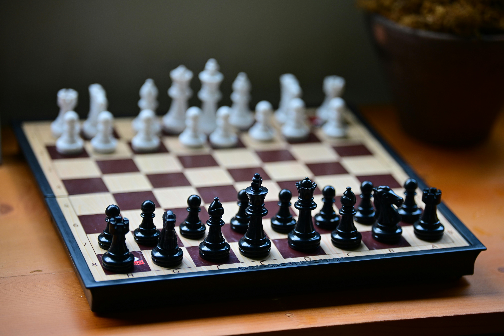

Cognitive Skills
Learning chess can sharpen several core thinking skills in children, and the benefits tend to show up both in school and everyday decision-making. Chess requires accountability, giving students practice in ownership of their decisions. One big advantage is improved problem-solving. Chess constantly asks kids to evaluate situations, consider options, and predict outcomes. This strengthens their ability to break down complex problems into manageable steps instead of reacting impulsively. Finally, it can improve emotional control. Today, attention from students is in rapid decline due to a growing dependency on devices. Chess can engage students in a cognitive way, rather than a distracting one! When a student plays chess, every moment in the game is a practice in focus and attention, leading to long term improvement and independence.
Life Skills
Chess isn't just about academic achievment, though studies show students who play chess regularly have improved test scores 30%-50%. Chess teaches students about decision-making, relaying the constant consequence of missteps, as well as the tremendous benefit to excellent planning! It can also teach them about patience, rushing in chess often leads to ruin, however careful deliberation can lead to satisfying victories. Lastly, and this tends to be a parent favorite, it teaches resilience, losing is a large part of the game. In fact, at the professional level, less than 30% of games end in victory. At the beginner stage, a 50% win rate is normal which means almost half the time, the young chess scholars will be losing. However, this shouldn't scare anyone we have a saying in chess, you either win, or you learn something! Every loss is a lesson hard learned, and will teach your student to become more resilient in life as well!
